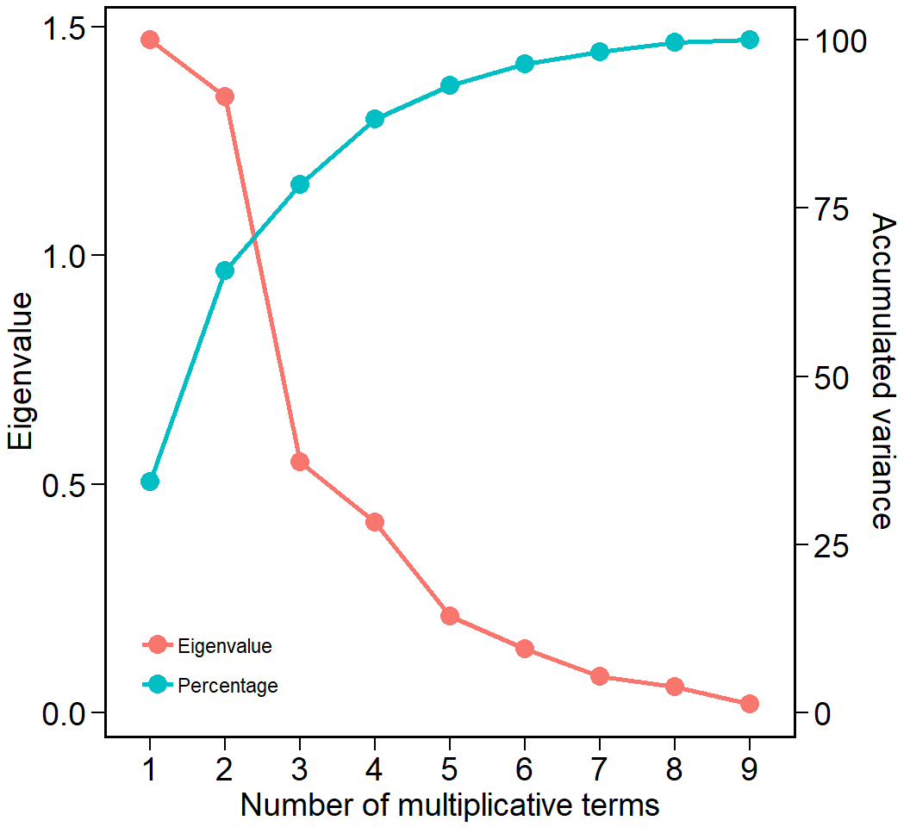
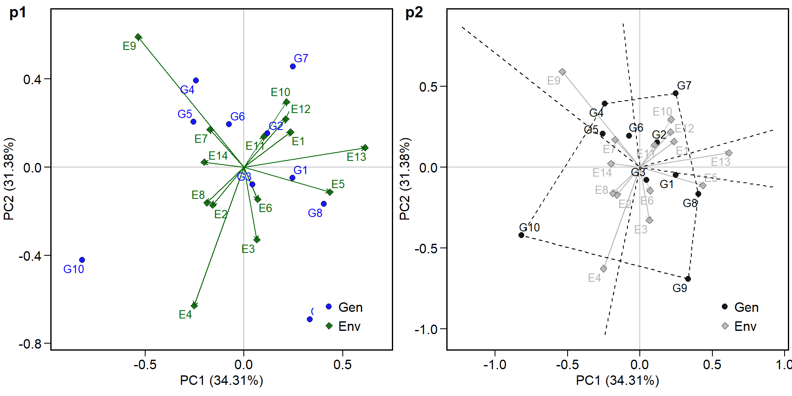
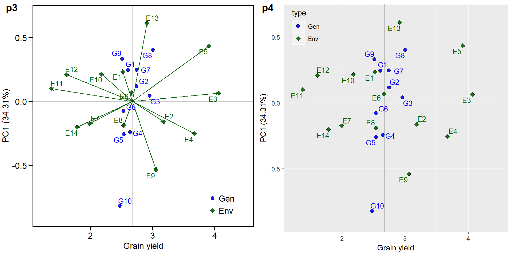
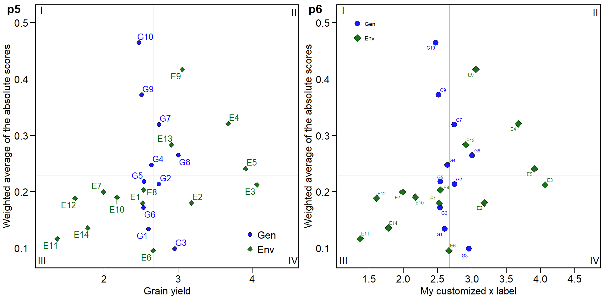
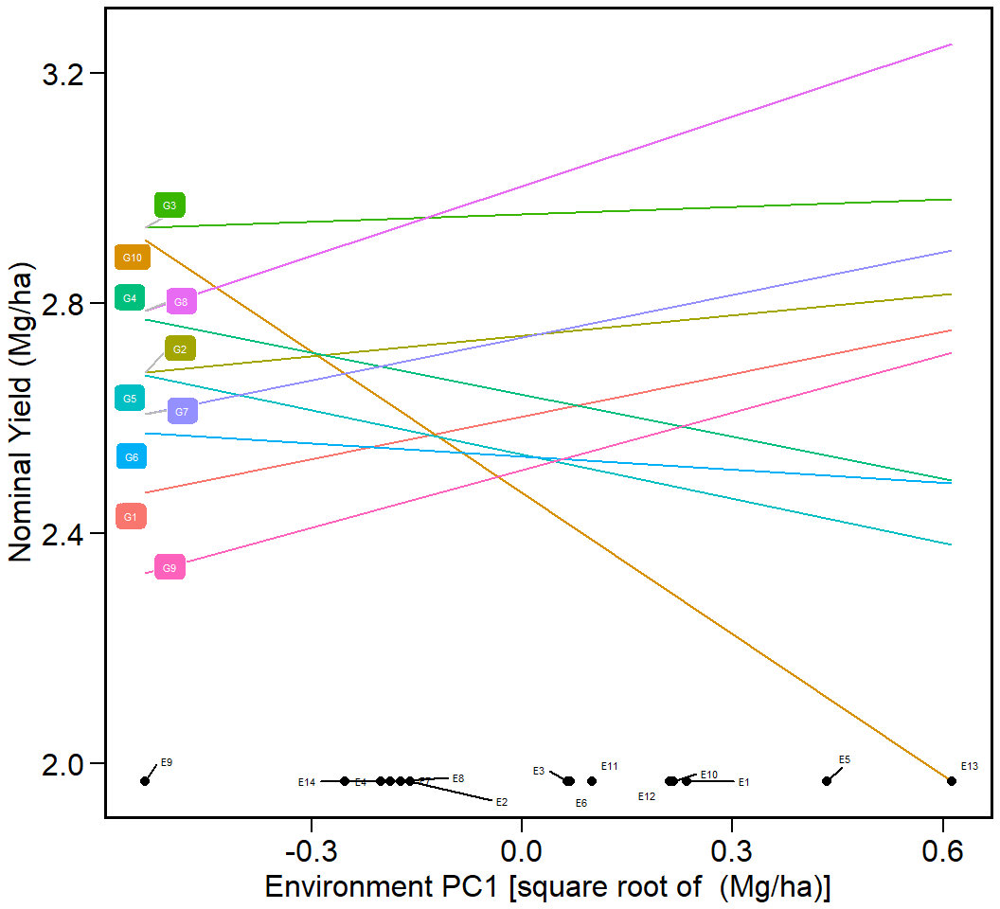
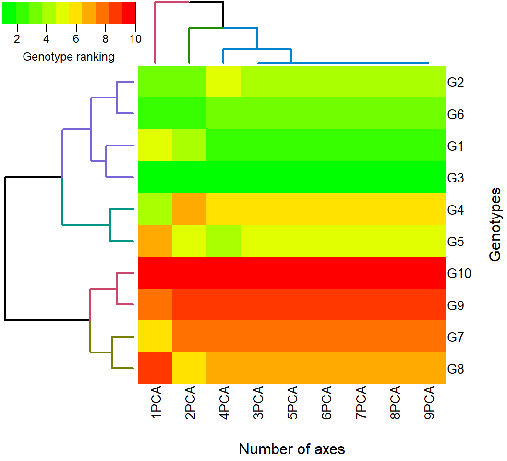

Analyzing multienvironment trials using BLUP
Source:vignettes/vignettes_BLUP.Rmd
vignettes_BLUP.RmdGetting started
A dataset called data_ge is provided to make reproducible examples. For more information, please, see ?data_ge. Other data sets can be used provided that the following columns are in the dataset: environment, genotype, block/replicate and response variable(s).
Estimating the WAASB (based on SVD of BLUP-interaction effects)
The WAASB() function computes the weighted average of absolute scores considering all possible IPCA from the Singular Value Decomposition of the BLUPs for genotype-vs-environment interaction effects obtained by an Linear Mixed-effect Model, as follows:
\[ WAASB_i = \sum_{k = 1}^{p} |IPCA_{ik} \times EP_k|/ \sum_{k = 1}^{p}EP_k \]
where \(WAASB_i\) is the weighted average of absolute scores of the ith genotype; \(IPCA_{ik}\) is the scores of the ith genotype in the kth IPCA; and \(EP_k\) is the explained variance of the kth PCA for \(k = 1,2,..,p\), \(p = min(G-1;E-1)\).
# Assuming equal weights for productivity and stability (default)
WAASB = WAASB(dataset,
resp = GY,
gen = GEN,
env = ENV,
rep = REP)## Done!Diagnostic plot for residuals
The function autoplot() is used to generate diagnostic plots of residuals of the model. The normality of the random effects of genotype and interaction effects may be also obtained by using type = "re".
library(ggplot2)
autoplot(WAASB$GY)
Printing the model outputs
Likelihood Ratio Tests
options(digits = 5)
data = WAASB$GY$LRT
kable(data, "html") %>%
kable_styling(bootstrap_options = "striped", "condensed",
position = "left", full_width = F, font_size = 12)| npar | logLik | AIC | LRT | Df | Pr(>Chisq) | |
|---|---|---|---|---|---|---|
| Complete | 45 | -214.72 | 519.43 | NA | NA | NA |
| Genotype | 44 | -224.37 | 536.75 | 19.315 | 1 | 1e-05 |
| Gen vs Env | 44 | -237.13 | 562.27 | 44.832 | 1 | 0e+00 |
The output LRT contains the Likelihood Ratio Tests for genotype and genotype-vs-environment random effects.
Variance components and genetic parameters
options(digits = 7)
data = WAASB$GY$ESTIMATES
kable(data, "html") %>%
kable_styling(bootstrap_options = "striped", "condensed",
position = "left", full_width = F, font_size = 12)| Parameters | Values |
|---|---|
| GEI variance | 0.056714 (31.26% of phenotypic variance.) |
| Genotypic variance | 0.028025 (15.45% of phenotypic variance.) |
| Residual variance | 0.096693 (53.29% of phenotypic variance.) |
| Phenotypic variance | 0.181432000765268 |
| Heritability | 0.154466820776706 |
| GEIr2 | 0.31258908175788 |
| Heribatility of means | 0.815198214388929 |
| Accuracy | 0.902883278385932 |
| rge | 0.369694636992275 |
| CVg | 6.25999359149609 |
| CVr | 11.6277882108427 |
| CV ratio | 0.53836494765692 |
In the output ESTIMATES, beyond the variance components for the declared random effects, some important parameters are also shown. Heribatility is the broad-sense heritability, \(\mathop h\nolimits_g^2\), estimated by \(\mathop h\nolimits_g^2 = \mathop {\hat\sigma} \nolimits_g^2 /\left( {\mathop {\hat\sigma} \nolimits_g^2 + \mathop {\hat\sigma} \nolimits_i^2 + \mathop {\hat\sigma} \nolimits_e^2 } \right)\) where \(\mathop {\hat\sigma} \nolimits_g^2\) is the genotypic variance; \(\mathop {\hat\sigma} \nolimits_i^2\) is the genotype-by-environment interaction variance; and \(\mathop {\hat\sigma} \nolimits_e^2\) is the residual variance. GEIr2 is the coefficient of determination of the interaction effects, \(\mathop r\nolimits_i^2\), estimated by \(\mathop r\nolimits_i^2 = \mathop {\hat\sigma} \nolimits_i^2 /\left( {\mathop {\hat\sigma} \nolimits_g^2 + \mathop {\hat\sigma} \nolimits_i^2 + \mathop {\hat\sigma} \nolimits_e^2 } \right)\); Heribatility of means is the heribability on the mean basis, \(\mathop h\nolimits_{gm}^2\), estimated by \(\mathop h\nolimits_{gm}^2 = \mathop {\hat\sigma} \nolimits_g^2 /\left[ {\mathop {\hat\sigma} \nolimits_g^2 + \mathop {\hat\sigma} \nolimits_i^2 /e + \mathop {\hat\sigma} \nolimits_e^2 /\left( {eb} \right)} \right]\), where e and b are the number of environments and blocks, respectively; Accuracy is the accuracy of selection, Ac, estimated by \(Ac = \sqrt{\mathop h\nolimits_{gm}^2}\) ; rge is the genotype-environment correlation, \(\mathop r\nolimits_{ge}\), estimated by \(\mathop r\nolimits_{ge} = \mathop {\hat\sigma} \nolimits_g^2 /\left({\mathop {\hat\sigma} \nolimits_g^2 + \mathop {\hat\sigma} \nolimits_i^2} \right)\); CVg is the the genotypic coefficient of variation, estimated by \(\left( {\sqrt {\mathop {\hat \sigma }\nolimits_g^2 } /\mu } \right) \times 100\) , where \(\mu\) is the grand mean; CVr is the residual coefficient of variation, estimated by \(\left( {\sqrt {\mathop {\hat \sigma }\nolimits_e^2 } /\mu } \right) \times 100\) ; CV ratio is the ratio between genotypic and residual coefficient of variation.
Some useful information
options(digits = 4)
data = WAASB$GY$Details
kable(data, "html") %>%
kable_styling(bootstrap_options = "striped", "condensed",
position = "left", full_width = F, font_size = 12)| Parameters | Values |
|---|---|
| Ngen | 10 |
| Nenv | 14 |
| OVmean | 2.6742 |
| Min | 0.8991 (Genotype G10 in E11 ) |
| Max | 4.8121 (Genotype G8 in E5 ) |
| MinENV | Environment E11 (1.3683) |
| MaxENV | Environment E3 (4.0643) |
| MinGEN | Genotype G10 (2.4712) |
| MaxGEN | Genotype G8 (3.0036) |
The following pieces of information are provided in Details output. WgtResponse is the weight for the response variable in estimating WAASB; WgtWAAS is the weight for stability; Ngen is the number of genotypes; Nenv is the number of environments; OVmean is the overall mean; Min is the minimum value observed (returning the genotype and environment); Max is the maximum observed; MinENV is the environment with the lower mean; MaxENV is the environment with the largest mean observed; MinGEN is the genotype with the lower mean; MaxGEN is the genotype with the largest mean.
The WAASB object
options(digits = 4)
data = WAASB$GY$model[, c(1:3,13:17, 21:22)]
kable(data, "html") %>%
kable_styling(bootstrap_options = "striped", "condensed",
position = "left", full_width = F, font_size = 12)| type | Code | Y | WAASB | PctResp | PctWAASB | OrResp | OrWAASB | WAASBY | OrWAASBY |
|---|---|---|---|---|---|---|---|---|---|
| GEN | G1 | 2.604 | 0.1341 | 24.878 | 90.37 | 6 | 2 | 57.62 | 4 |
| GEN | G10 | 2.471 | 0.4646 | 0.000 | 0.00 | 10 | 10 | 0.00 | 10 |
| GEN | G2 | 2.744 | 0.2138 | 51.262 | 68.57 | 3 | 4 | 59.92 | 3 |
| GEN | G3 | 2.955 | 0.0989 | 90.929 | 100.00 | 2 | 1 | 95.46 | 1 |
| GEN | G4 | 2.642 | 0.2475 | 32.060 | 59.36 | 5 | 6 | 45.71 | 6 |
| GEN | G5 | 2.537 | 0.2178 | 12.419 | 67.49 | 7 | 5 | 39.95 | 8 |
| GEN | G6 | 2.534 | 0.1721 | 11.797 | 79.98 | 8 | 3 | 45.89 | 5 |
| GEN | G7 | 2.741 | 0.3190 | 50.654 | 39.80 | 4 | 8 | 45.23 | 7 |
| GEN | G8 | 3.004 | 0.2649 | 100.000 | 54.61 | 1 | 7 | 77.30 | 2 |
| GEN | G9 | 2.510 | 0.3720 | 7.320 | 25.32 | 9 | 9 | 16.32 | 9 |
| ENV | E1 | 2.521 | 0.1799 | 42.744 | 73.77 | 9 | 4 | 58.26 | 5 |
| ENV | E10 | 2.175 | 0.1904 | 29.930 | 70.49 | 10 | 7 | 50.21 | 9 |
| ENV | E11 | 1.368 | 0.1165 | 0.000 | 93.47 | 14 | 2 | 46.74 | 11 |
| ENV | E12 | 1.609 | 0.1888 | 8.911 | 71.00 | 13 | 6 | 39.96 | 13 |
| ENV | E13 | 2.910 | 0.2835 | 57.171 | 41.55 | 6 | 12 | 49.36 | 10 |
| ENV | E14 | 1.782 | 0.1360 | 15.343 | 87.43 | 12 | 3 | 51.39 | 8 |
| ENV | E2 | 3.180 | 0.1806 | 67.198 | 73.55 | 4 | 5 | 70.37 | 4 |
| ENV | E3 | 4.064 | 0.2122 | 100.000 | 63.72 | 1 | 10 | 81.86 | 1 |
| ENV | E4 | 3.675 | 0.3207 | 85.569 | 29.97 | 3 | 13 | 57.77 | 6 |
| ENV | E5 | 3.910 | 0.2410 | 94.294 | 54.76 | 2 | 11 | 74.53 | 2 |
| ENV | E6 | 2.663 | 0.0955 | 48.031 | 100.00 | 7 | 1 | 74.02 | 3 |
| ENV | E7 | 1.989 | 0.1997 | 23.020 | 67.61 | 11 | 8 | 45.32 | 12 |
| ENV | E8 | 2.536 | 0.2034 | 43.327 | 66.47 | 8 | 9 | 54.90 | 7 |
| ENV | E9 | 3.057 | 0.4171 | 62.622 | 0.00 | 5 | 14 | 31.31 | 14 |
This output generated by the WAASB function is very similar to those shown in the sections 5.1 and 5.2. The main difference here, is that the singular value decomposition is based on the BLUP interaction effect matrix and the WAASB in this output is the weighted average of the absolute scores, estimated with all estimated PCA axes, where instead WAAS that is estimated considering only PCA axes with P-value \(\le\) 0.05.
BLUP for genotypes
options(digits = 4)
data = WAASB$GY$blupGEN[1:10,]
kable(data, "html") %>%
kable_styling(bootstrap_options = "striped", "condensed",
position = "left", full_width = F, font_size = 12)| Rank | GEN | BLUPg | Predicted | LL | UL |
|---|---|---|---|---|---|
| 1 | G8 | 0.2685 | 2.943 | 2.839 | 3.046 |
| 2 | G3 | 0.2292 | 2.903 | 2.800 | 3.007 |
| 3 | G2 | 0.0570 | 2.731 | 2.628 | 2.835 |
| 4 | G7 | 0.0543 | 2.729 | 2.625 | 2.832 |
| 5 | G4 | -0.0264 | 2.648 | 2.544 | 2.751 |
| 6 | G1 | -0.0575 | 2.617 | 2.513 | 2.720 |
| 7 | G5 | -0.1116 | 2.563 | 2.459 | 2.666 |
| 8 | G6 | -0.1143 | 2.560 | 2.456 | 2.663 |
| 9 | G9 | -0.1337 | 2.541 | 2.437 | 2.644 |
| 10 | G10 | -0.1655 | 2.509 | 2.405 | 2.612 |
Plotting the BLUP for genotypes
# No file exported
p1 = plot.blup(WAASB$GY)
p2 = plot.blup(WAASB$GY,
col.shape = c("gray20", "gray80")) + coord_flip()
plot_grid(p1, p2,
labels = c("p1", "p2"))
This output shows the predicted means for genotypes. BLUPg is the genotypic effect \((\hat{g}_{i})\) estimated by \(\hat{g}_{i} = h_g^2(\bar{y}_{i.}-\bar{y}_{..})\) where \(h_g^2\) is the shrinkage effect for genotype. Predicted is the predicted mean estimated by \(\hat{g}_{i}+\mu\) where \(\mu\) is the grand mean. LL and UL are the lower and upper limits, respectively, estimated by \((\hat{g}_{i}+\mu)\pm{CI}\). \(CI\) is the confidence interval for BLUP prediction assuming a given probability error, where \(CI = t\times\sqrt{((1-Ac)\times{\mathop \sigma \nolimits_g^2)}}\) where \(t\) is the Student’s t value for a two-tailed t test at a given probability error; \(Ac\) is the accuracy of selection and \(\mathop \sigma \nolimits_g^2\) is the genotypic variance.
BLUP for genotypes X environment combination
options(digits = 4)
data = WAASB$GY$BLUPgge[1:10,]
kable(data, "html") %>%
kable_styling(bootstrap_options = "striped", "condensed",
position = "left", full_width = F, font_size = 12)| ENV | GEN | BLUPge | BLUPg | BLUPg+ge | Predicted | LL | UL |
|---|---|---|---|---|---|---|---|
| E1 | G1 | -0.0621 | -0.0575 | -0.1196 | 2.401 | 2.298 | 2.505 |
| E1 | G10 | -0.2430 | -0.1655 | -0.4085 | 2.112 | 2.009 | 2.216 |
| E1 | G2 | 0.2066 | 0.0570 | 0.2636 | 2.784 | 2.681 | 2.888 |
| E1 | G3 | 0.0885 | 0.2292 | 0.3176 | 2.838 | 2.735 | 2.942 |
| E1 | G4 | 0.0601 | -0.0264 | 0.0337 | 2.554 | 2.451 | 2.658 |
| E1 | G5 | -0.1408 | -0.1116 | -0.2524 | 2.268 | 2.165 | 2.372 |
| E1 | G6 | -0.0673 | -0.1143 | -0.1816 | 2.339 | 2.236 | 2.443 |
| E1 | G7 | 0.1267 | 0.0543 | 0.1810 | 2.702 | 2.598 | 2.805 |
| E1 | G8 | 0.0702 | 0.2685 | 0.3388 | 2.859 | 2.756 | 2.963 |
| E1 | G9 | -0.0389 | -0.1337 | -0.1726 | 2.348 | 2.244 | 2.451 |
This output shows the predicted means for each genotype and environment combination. BLUPg is the genotypic effect described above. BLUPge is the genotypic effect of the ith genotype in the jth environment \((\hat{g}_{ij})\) estimated by \(\hat{g}_{ij} = h_g^2(\bar{y}_{i.}-\bar{y}_{..})+h_{ge}^2(y_{ij}-\bar{y}_{i.}-\bar{y}_{.j}+\bar{y}_{..})\), where \(h_{ge}^2\) is the shrinkage effect for the genotype-by-environment interaction; BLUPg+ge is \(BLUP_g+BLUP_{ge}\); Predicted is the predicted mean (\(\hat{y}_{ij}\)) estimated by \(\hat{y}_{ij} = \bar{y}_{.j}+BLUP_{g+ge}\).
Eigenvalues from the SVD
options(digits = 4)
data = WAASB$GY$PCA
kable(data, "html") %>%
kable_styling(bootstrap_options = "striped", "condensed",
position = "left", full_width = F, font_size = 12)| PC | Eigenvalue | Proportion | Accumulated |
|---|---|---|---|
| 1 | 1.4722 | 34.3084 | 34.31 |
| 2 | 1.3467 | 31.3835 | 65.69 |
| 3 | 0.5479 | 12.7677 | 78.46 |
| 4 | 0.4167 | 9.7099 | 88.17 |
| 5 | 0.2126 | 4.9548 | 93.12 |
| 6 | 0.1397 | 3.2562 | 96.38 |
| 7 | 0.0791 | 1.8437 | 98.22 |
| 8 | 0.0567 | 1.3221 | 99.55 |
| 9 | 0.0195 | 0.4537 | 100.00 |
plot.eigen(WAASB$GY, size.lab = 14, size.tex.lab = 14)
The above output shows the eigenvalues and the proportion of variance explained by each principal component axis of the BLUP interaction effects matrix.
Phenotypic means
options(digits = 4)
data = WAASB$GY$MeansGxE[1:10,]
kable(data, "html") %>%
kable_styling(bootstrap_options = "striped", "condensed",
position = "left", full_width = F, font_size = 12)| ENV | GEN | Y | envPC1 | genPC1 | nominal |
|---|---|---|---|---|---|
| E1 | G1 | 2.366 | 0.2353 | 0.2459 | 2.662 |
| E1 | G10 | 1.974 | 0.2353 | -0.8189 | 2.279 |
| E1 | G2 | 2.902 | 0.2353 | 0.1189 | 2.772 |
| E1 | G3 | 2.889 | 0.2353 | 0.0437 | 2.966 |
| E1 | G4 | 2.589 | 0.2353 | -0.2429 | 2.585 |
| E1 | G5 | 2.188 | 0.2353 | -0.2563 | 2.477 |
| E1 | G6 | 2.301 | 0.2353 | -0.0753 | 2.516 |
| E1 | G7 | 2.774 | 0.2353 | 0.2473 | 2.799 |
| E1 | G8 | 2.899 | 0.2353 | 0.4042 | 3.099 |
| E1 | G9 | 2.326 | 0.2353 | 0.3335 | 2.589 |
In this output, Y is the phenotypic mean for each genotype and environment combination (\(y_{ij}\)), estimated by \(y_{ij} = \sum_k{y_{ij}}/B\) with \(k = 1,2,...B\).
Biplots
We will show how biplots may be obtained for both traditional AMMI model, fitted by the function WAAS.AMMI() and the mixed-effect model fitted by the function WAASB(). Provided that an object of class “WAAS.AMMI” or “WAASB” is available in the global environment, the graphics may be obtained using the function plot.scores(). To do that, we will revisit the previusly fitted model WAASB . Please, refer to ?plot.scores for more details. Four types of graphics can be generated: 1 = \(PC1 \times PC2\); 2 = \(GY \times PC1\); 3 = \(GY \times WAASB\); and 4 = a graphic with nominal yield as a function of the environment PCA1 scores.
biplot type 1: PC1 x PC2
library(cowplot)
p1 = plot.scores(WAASB$GY, type = 1)
p2 = plot.scores(WAASB$GY,
type = 1,
polygon = TRUE,
col.gen = "black",
col.env = "gray70",
col.segm.env = "gray70",
axis.expand = 1.5)
plot_grid(p1, p2, labels = c("p1","p2"))
biplot type 2: GY x PC1
p3 = plot.scores(WAASB$GY, type = 2)
p4 = plot.scores(WAASB$GY, type = 2,
col.segm.env = "transparent") +
theme_gray() +
theme(legend.position = c(0.1, 0.9),
legend.background = element_rect(fill = NA))
plot_grid(p3, p4, labels = c("p3","p4"))
biplot type 3: GY x WAASB
The quadrants proposed in the following biplot represent the four classifications proposed here regarding the joint interpretation of productivity and stability. The genotypes or environments included in quadrant I can be considered unstable genotypes or environments with high discrimination ability, and with productivity below the grand mean. In quadrant II are included unstable genotypes, although with productivity above the grand mean. The environments included in this quadrant deserve special attention since, in addition to providing high magnitudes of the response variable, they present a good discrimination ability. Genotypes within quadrant III have low productivity, but can be considered stable due to the lower values of WAASB. The lower this value, the more stable the genotype can be considered. The environments included in this quadrant can be considered as poorly productive and with low discrimination ability. The genotypes within the quadrant IV are higly productive and broadly adapted due to the high magnitude of the response variable and high stability performance (lower values of WAASB).
p5 = plot.scores(WAASB$GY, type = 3)
p6 = plot.scores(WAASB$GY, type = 3,
x.lab = "My customized x label",
size.shape = 3,
size.tex.pa = 2,
x.lim = c(1.2, 4.7),
x.breaks = seq(1.5, 4.5, by = 0.5)) +
theme(legend.position = c(0.1, 0.9))
plot_grid(p5, p6, labels = c("p5","p6"))
biplot type 4 : nominal yield and environment IPCA1
plot.scores(WAASB$GY,
type = 4, size.tex.pa = 1.5)
Estimating the WAASBY index
The function WAASBratio considers both stability (WAASB) and productivity for genotype ranking considering the following model:
\[ WAASB{Y_i} = \frac{{\left( {r{G_i} \times {\theta _Y}} \right) + \left( {r{W_i} \times {\theta _S}} \right)}}{{{\theta _Y} + {\theta _S}}} \]
where \(WAASBY_i\) is the superiority index for the i-th genotype that weights between performance and stability; \(rG_i\) and \(rW_i\) are the rescaled values (0-100) for GY and WAASB, respectively; \(\theta _Y\) and \(\theta_S\) are the weights for GY and WAASB, respectively.
This function provides the option of attributing weights for stability and productivity in genotype ranking. This is important depending on the goal of a selection strategy or cultivar reccomendation. For example, if the goal is to select a genotype with high yield (independently of the stability performance), that genotype with the first rank in a WAASB/GY = 0/100 ratio should be selected. The reciprocal is true. Aiming at selecting high-stable genotypes (independently of the productivity), that genotype with the first rank in a WAASB/GY = 100/0 ratio should be selected. By default, the increment on the WAASB/GY ratio is equal to 5 and the WAASBY values are saved when the WAASB/GY ratio is equal to 50/50. Thus, twenty one different scenarios are computed, and for each scenario, the genotypes are ranked based on the WAASBY values.
In the following example we will assume that we want to obtain the ranks changing the WAASB/GY ratio in 10% each scenario and to plot the WAASBY values considering a WAASB/GY ratio equal 30/70. Important! THE ARGUMENT saveWAASY MUST BE DIVISIBLE BY increment!
WAASBYratio = WAASBYratio(dataset,
resp = GY,
gen = GEN,
env = ENV,
rep = REP,
increment = 50,
saveWAASY = 50)This procedure can also be used with the traditional AMMI analysis. This approach is easily implemented using the WAASratio.AMMI function shown in the following example.
WAASBYratio2 = WAASratio.AMMI(dataset,
resp = GY,
gen = GEN,
env = ENV,
rep = REP,
increment = 50,
saveWAASY = 50)Printing the model outputs
- WAASBY values
options(digits = 4)
data = WAASBYratio$WAASY
kable(data, "html") %>%
kable_styling(bootstrap_options = "striped", "condensed",
position = "left", full_width = F, font_size = 12)| Code | PesRes | PesWAAS | WAASY | Mean |
|---|---|---|---|---|
| G10 | 50 | 50 | 0.00 | below |
| G9 | 50 | 50 | 16.32 | below |
| G5 | 50 | 50 | 39.95 | below |
| G7 | 50 | 50 | 45.23 | below |
| G4 | 50 | 50 | 45.71 | below |
| G6 | 50 | 50 | 45.89 | below |
| G1 | 50 | 50 | 57.62 | above |
| G2 | 50 | 50 | 59.92 | above |
| G8 | 50 | 50 | 77.30 | above |
| G3 | 50 | 50 | 95.46 | above |
In this output, PesResp and PesWAAS are the weights attributed to response variable and stability, respecively, to compute de WAASY values.
- Genotype ranking for each scenario of WAASBY/GY ratio.
options(digits = 4)
data = WAASBYratio$hetcomb
kable(data, "html") %>%
kable_styling(bootstrap_options = "striped", "condensed",
position = "left", full_width = F, font_size = 12)| 100/0 | 50/50 | 0/100 | |
|---|---|---|---|
| G1 | 2 | 4 | 6 |
| G10 | 10 | 10 | 10 |
| G2 | 4 | 3 | 3 |
| G3 | 1 | 1 | 2 |
| G4 | 6 | 6 | 5 |
| G5 | 5 | 8 | 7 |
| G6 | 3 | 5 | 8 |
| G7 | 8 | 7 | 4 |
| G8 | 7 | 2 | 1 |
| G9 | 9 | 9 | 9 |
- Genotype ranking depending on the number of multiplicative terms used to estimate the WAASB index.
options(digits = 4)
data = WAASBYratio$hetdata
kable(data, "html") %>%
kable_styling(bootstrap_options = "striped", "condensed",
position = "left", full_width = F, font_size = 12)| 9PCA | 8PCA | 7PCA | 6PCA | 5PCA | 4PCA | 3PCA | 2PCA | 1PCA | |
|---|---|---|---|---|---|---|---|---|---|
| G1 | 2 | 2 | 2 | 2 | 2 | 2 | 2 | 4 | 5 |
| G10 | 10 | 10 | 10 | 10 | 10 | 10 | 10 | 10 | 10 |
| G2 | 4 | 4 | 4 | 4 | 4 | 5 | 4 | 3 | 3 |
| G3 | 1 | 1 | 1 | 1 | 1 | 1 | 1 | 1 | 1 |
| G4 | 6 | 6 | 6 | 6 | 6 | 6 | 6 | 7 | 4 |
| G5 | 5 | 5 | 5 | 5 | 5 | 4 | 5 | 5 | 7 |
| G6 | 3 | 3 | 3 | 3 | 3 | 3 | 3 | 2 | 2 |
| G7 | 8 | 8 | 8 | 8 | 8 | 8 | 8 | 8 | 6 |
| G8 | 7 | 7 | 7 | 7 | 7 | 7 | 7 | 6 | 9 |
| G9 | 9 | 9 | 9 | 9 | 9 | 9 | 9 | 9 | 8 |
Plotting the WAASBY values
library(ggplot2)
p1 = plot.WAASBY(WAASBYratio)
p2 = plot.WAASBY(WAASBYratio, col.shape = c("gray20", "gray80"))
plot_grid(p1, p2, labels = c("p1", "p2"))
Plotting the heat map graphics
The first type of heatmap shows the genotype ranking depending on the number of principal component axes used for estimating the WAASB index. An euclidean distance-based dendrogram is used for grouping the genotype ranking for both genotypes and principal component axes. The second type of heatmap shows the genotype ranking depending on the WAASB/GY ratio. The ranks obtained with a ratio of 100/0 considers exclusively the stability for genotype ranking. On the other hand, a ratio of 0/100 considers exclusively the productivity for genotype ranking. Four clusters are estimated (1) unproductive and unstable genotypes; (2) productive, but unstable genotypes; (3) stable, but unproductive genotypes; and (4), productive and stable genotypes.
Ranks of genotypes depending on the number of PCA used to estimate the WAASB
plot(WAASBYratio, type = 1)

Others BLUP-based stability indexes
Colombari Filho et al. (2013) have shown the use of three BLUP-based indexes for selecting genotypes with performance and stability. The first is the harmonic mean of genotypic values -or BLUPS- (HMGV) a stability index that considers the genotype with the highest harmonic mean across environments as the most stable, as follows:
\[ HMGV_i = \frac{1}{e}\sum\limits_{j = 1}^e {\frac{1}{{BLUP_{ij}}}} \]
The second is the relative performance of genotypic values (RPGV), an adaptability index estimated as follows:
\[ RPGV_i = \frac{1}{e}{\sum\limits_{j = 1}^e {BLUP_{ij}} /\mathop \mu \nolimits_j } \]
The third and last is the harmonic mean of relative performance of genotypic values (HMRPGV), a simultaneous selection index for stability, adaptability and mean performance, estimated as follows:
\[ HMRPGV_i = \frac{1}{e}\sum\limits_{j = 1}^e {\frac{1}{{BLUP_{ij}/{\mu _j}}}} \]
res_inde = Resende_indexes(WAASB)
kable(res_inde, "html") %>%
kable_styling(bootstrap_options = "striped", "condensed",
position = "left", full_width = F, font_size = 12)
|
References
Colombari Filho, J. M., M. D. V. Resende, O. P. Morais, A. P. Castro, É. P. Guimarães, J. A. Pereira, M. M. Utumi, and F. Breseghello. 2013. “Upland rice breeding in Brazil: a simultaneous genotypic evaluation of stability, adaptability and grain yield.” Euphytica 192 (1): 117–29. doi:10.1007/s10681-013-0922-2.